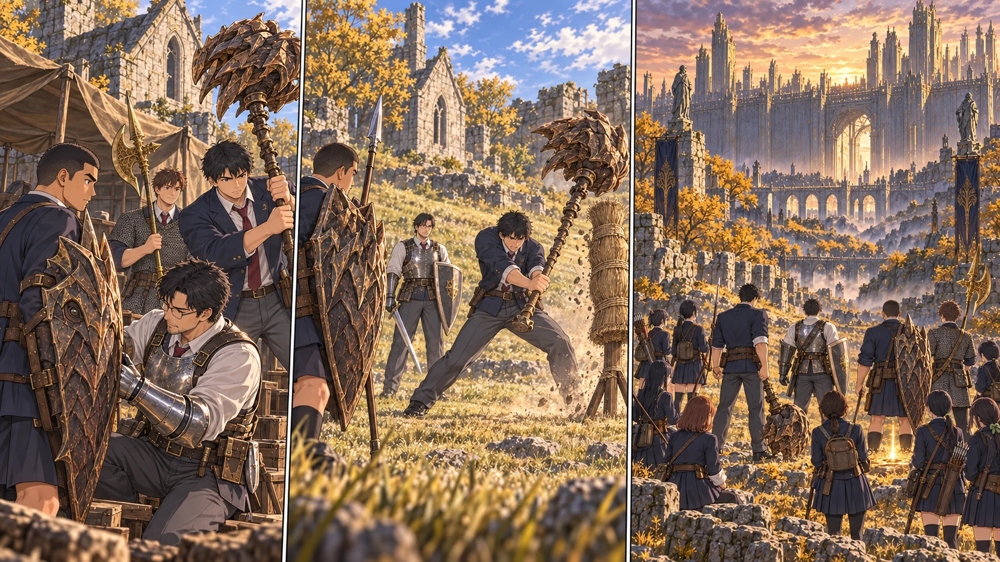

DAY66 / TURN1−76
竜の爪を、仲間の手へ。

健太「受けてる間に、お願いします。……ずっとは無理なんで」
【DAY66｜教会へ戻る】登録済みの祝福を使って、主力十三人はいったん教会へ戻った。大きな竜の爪を見た留守番組が、手を止める。歓声より先に「持って帰れたんだ」という声が上がった。その重さは、門の前で自分たちを押し潰そうとしていた相手の重さだった。
先生は戦利品を二つの隊へ分けた。A隊の直人には大竜爪。B隊の健太には竜爪の盾。大地の黄金のハルバードは、そのまま彼の手に残る。これで片方の隊へ武器を借りに行かなくても、それぞれが強敵に向き合える。
【成長｜1670ルーン】直人はLv27から35へ。筋力20、技量14。大竜爪が求める筋力30には届かないが、両手で扱えば要求を満たす。先生はそれを確認してから渡した。「盾を同時には持てない。その分まで一人で頑張るな」。直人は古い大剣と盾を予備へ置き、両手で長い柄を握った。
健太はLv26から41へ、筋力28、技量12まで上げた。数字だけなら、隣にいる仲間をいくつも追い越していた。それが急に怖くなる。守れと言われた場所が、この大盾の幅だけ広くなったようだった。「受けてる間に、お願いします。……ずっとは無理なんで」。直人が頷く。「こっちも、振った後は頼む」。
健太が盾を構えて一歩下がる。その脇を直人が通り、爪を振り下ろす。初めの一振りは、思ったより遠くへ身体を持っていった。二人は位置をずらしてやり直す。筋力を得たことと、仲間のすぐ隣で安全に振れることは、同じではなかった。
旧装備と荷をいったん下ろし、停止、後退、武器を休める動作を確かめた。直人の「我慢」は短い踏ん張りに使う。健太の「シールドバッシュ」は押し返すための選択肢になる。どちらも使えば戦技の余力を消費する。強い道具が二つ増えても、疲れなくなったわけではない。
【慣熟判定｜2d6＋3＝10】三度目には、直人が振り終える位置へ健太が先に入らずに済んだ。重い武器を止め、二人が互いの退く場所を空ける。まだ軽快とは言えない。それでも、仲間を巻き込まない交代動作は確認できた。
【補給】花と千夏の弓、悠と拓海の杖、健太の傷んだ衣類を直した。普通矢を八十本、遠征の食料を三日分。直人は新しい武器を見ていた目を、修理から戻ってきた花の弓へ移した。あれが飛んでいる間に、今度は自分が一歩前へ出る。
美咲と澪は草地で軍馬の世話を続けていた。乗せてくれるかどうかより、まず人が動いても慌てないこと。手綱を持つ手を変え、仕事の音がする場所でも立っていられるかを確かめる。出撃の準備が終わっても、馬の準備まで同じ日に終わるとは限らない。
【留守番の成果｜馬11／生活7】軍馬は今日は、教会の作業音の中でも落ち着いて待てた。慣れの段階は三へ。まだ騎乗の確認はしていない。近場の狩りは小さな収穫に留まり、前日の残りと合わせても足りない四人分を買い足す。生活班は、勝利の日の後も毎日の仕事を積み重ねていた。
【王都を前に】午後、十三人は外廓の戦場跡へ戻った。石壁の向こうに、黄金樹へ寄り添うような王都の輪郭が見えた。先生は白い紙に、門から先を空白のまま残した。攻略情報の道筋は書ける。だが、十三人で通れる場所、待てる場所、負傷者を運べる階段は、自分たちの足で確かめなければならない。
直人の大竜爪が地面に低い音を立てた。健太が盾を脇へ置く。二人とも、まだ新しい武器を自分の手の延長のようには扱えない。それでも先生一人の背中しか見ていなかった頃とは、立っている位置が変わっていた。明日は、自分たちが前を支える。
今回の判定記録
| 判定 | 出目 | 補正 | 合計 |
|---|
| training | 4+3 | 3 | 10 |
| horse | 3+6 | 2 | 11 |
| base | 2+2 | 3 | 7 |
抽選前の条件 · 抽選結果